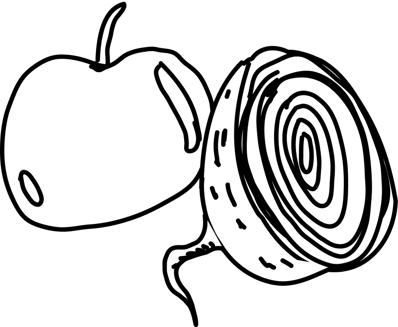

Wir laden ein zum gemeinsamen Suppen essen im Holligerhof.
Freitag
13.02.2026
Ab 18:00 Uhr
Holligerhof 8
3008 Bern
Am 24. Dezember 2025 veranstalteten wir unsere dritte Queernachten.
Gemeinsam haben wir mit unseren Wahlfamilien gefeiert.
neben Essen, Chillen, Basteln, Spielen, Haare schneiden, Massage, Karaoke und OpenStage gabs ab 20:00 Uhr Drag vom feinsten mit:
Edingard & Wanda
The Gina
Bartli von Glitzer
und Gertrudeli Trübeli
Sonntag
24.12.2025
ab 18:00 Uhr
Prozess Bar
Bahnstrasse 44
3008 Bern
Wir haben einen Abendtisch organisiert, bei dem wir alle drei Gänge Frittiert haben. Wie immer vegan und glutenfrei.
Samstag
08.11.2025
Ab 11:30 Uhr
Holligerhof 8
3008 Bern
Bromelia hat eingeladen zum gemütlichen Verweilen, Snacken und Geniessen. Wärend wir die eine oder andere Darbietung am Open Mic erleben durften und dazu ein Apéro Riche schnaussen konnten.
Freitag
19.09.2054
ab 19:00 Uhr
Prozess Bar
Bahnstrasse 44
3008 Bern
Wir wollten wieder einen Grill-Chill-Hangout auf der Wiese
neben dem Bootshaus Wylergut veranstallten.
Leider musste der Event wegen schlechtem Wetter abgesagt werden.
Samstag
26.07.2025
ab 13:00 Uhr
Bootshaus Wylergut
Uferweg 54/60
3014 Bern
Am Samstag 03. März haben wir gemeinsam einen Spiel, Spass und Sport Nachmittag in der Turnhalle Sonnenhof verbracht.
Samstag
03.03.2025
ab 14:00 Uhr
Turnhalle Sonnenhof
Jolimontstr. 1
3006 Bern

Der erste Bromelia Brunch hat im Holligerhof stattgefunden.
Wer wollte durfte auch was seleber mitbrigen.
Sonntag
16.03.2025
Ab 11:00 Uhr
Holligerhof 8
3008 Bern
Und schon wieder ist ein Bromelia Jahr vergangen und wir dürfen unsere dritte Party ankünden. Diesmal laden wir zu einem Jubiläums-Dayrave ein.
Ab 14:00 Uhr kann man hören, schauen, staunen & tanzen.
Weitere Informationen folgen.
Samstag
28.09.2024
ab 14:00 Uhr
Tripity Bern
Weissensteinstr. 4
3008 Bern
Unser nächster veganer & glutenfreier Abendtisch.
Wiedereinmal im Par Toutes.
Donnerstag
22.08.2024
ab 18:00 Uhr
Par Toutes
Mühlemattstr. 31 3007
Wir veranstalten einen Grill-Chill-Hangout auf der Wiese
neben dem Bootshaus Wylergut.
Bringt Spiele, etwas zum Essen (wer mag, darf auch gerne
etwas zum teilen bringen) und gute Laune.
Hat nicht stattgefunden
Der Anlass findet nur bei gutem Wetter statt.
Ihr werdet über Instagram auf dem laufenden gehalten.
Samstag
20.07.2024
ab 11:00 Uhr
Bootshaus Wylergut
Uferweg 54/60
3014 Bern
Der Abendtisch hat zum ersten Mal im Par Toutes stattgefunden. Es gab Randen-Apfelsalat mit Knäckebrot, Rotkrautrisotto mit glasiertem Chicorée und Kürbiskernen und ein Orangen-Schokoladenmousse
Sonntag
10.03.2024
ab 14:00 Uhr
Par Toutes
Mühlemattstr. 31
3007 Bern

Am 24. Dezember 2023 veranstalteten wir unsere zweite Queernachten.
Gemeinsam haben wir mit unseren Wahlfamilien gefeiert, sind beieinander gesessen, haben gelacht und uns bei einem Apéro Richè die Bäuche vollgeschlagen
Sonntag
24.12.2023
ab 14:00 Uhr
QFR
Neubrückstrasse 8
3012 Bern
Der Abendtisch hat am 24. November 2023 im Bootshaus Wylergut stattgefunden
Es gab Pastinaken Suppe mit Portulak und Aceto Balsamico, einen Pilzbraten mit Spätzli, Pilzrahmsauce und Herbstgemüse und eine Süssmostcreme mit Marroniecrumble zum Dessert.
Donnerstag
23.11.2023
ab 14:00 Uhr
Bootshaus Wylergut
Uferweg 54/60
3014 Bern